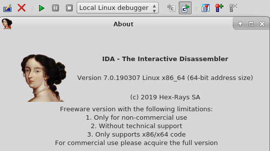

Malware Analysis
{kind=link}
Windows analysis enviroment
I’ve conducted a basic static analysis on 3 malicious PE samples. The files are stored on a windows machine accessible via the THM learning platform. The same windows enviroment is set up with some specific tools that I’ve used in different stages. I firstly analysed the MD5 checksum to see if they have been recorded on VirusTotal. After that, I identified if the PE samples have been obfuscated or packed with known softwares using PE ID. I have then proceed attempting to disassemble the files and veiw the imports with IDA Freeware. I finally analysed the strings and, once more, the imports with PE explorer.
Outcome
Upon completion of this introductory module I fully understood the importance of malware analysis and the impact that malware campaigns have on the current Cyber Security scenario. I therefore understoond the ultimate process of a malware attack and malware campaigns targeting. I have studied and understood the difference between static and dynamic analysis, and ultimately, I have gained a brief knowledge of some techniques and tools used throughout malware analysis.
Purpose of Malware Analysys
Not only is malware analysis a form of incidence response but it is al useful to gain an understanding of how a specific piece of malware functions so that defenses can be built to protect an organization's network. When analysing malware it is important to take to consider the followig:
- POE - Point of Entry
- Indicators that the malware has been executed
- How does the malware perform
- Can we prevent/detect further infection?
Static vs Dinamic Analysis
- Static Analysis: At its core, this method is of the analysis of the sample at the state it presents itself as, without executing the code.
- Dinamic Analysis: "Dynamic Analysis" essentially involves executing the sample and observing what happens
Resources
Kaspersky - https://www.kaspersky.co.uk/resource-center
Mandiant - https://www.mandiant.com/resources
Malwaretips - https://malwaretips.com/threads/malware-analysis-2-pe-imports-static-analysis.62135/
Tryhackme - https://tryhackme.com/room/malmalintroductory
BrightTALK - https://www.brighttalk.com/webcast/7451/527124?utm_source=Mandiant.com&utm_medium=web